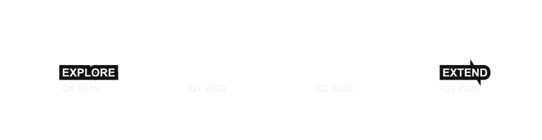
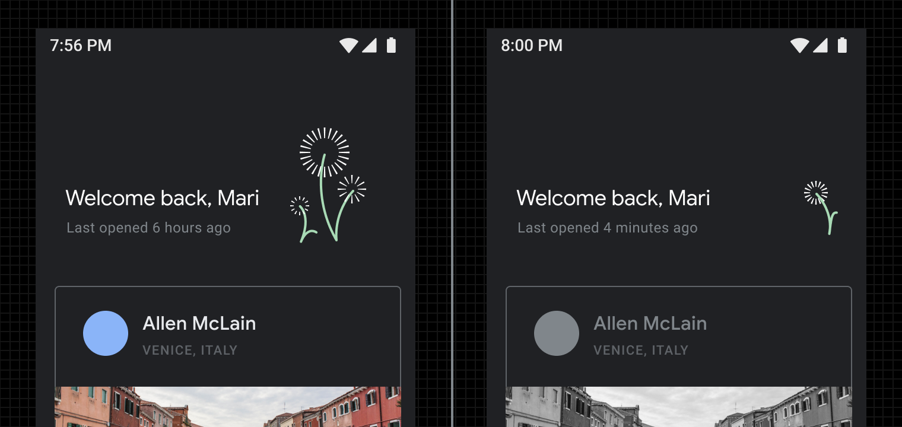

GOOGLE CASE STUDY
Digital Wellbeing Design Guidelines

I'm the Design Lead for user wellbeing at Google. In this role I develop visual and interaction design standards for Google products that affect wellbeing. In this role I mentor and manage staff, focus and prioritize design efforts and serve as a subject matter expert for Google.
With intense scrutiny around the role of technology, Google needed to prove that wellbeing was a priority. I initiated and led streams of work that resulted in fundamental changes to Google’s design infrastructure and product ecosystem. This effort is now in the Extend phase as seen below:
LEADERSHIP & MANAGEMENT
With a company wide goal to prioritize user wellbeing, there was a need to harmonize Google's UX workstreams(of which there many: Android, Youtube, Nest, ChromeOS) to resolve roles and responsibilities. I coordinated the re-organization of work into three district streams:
- PLATFORM: Coordinate user wellbeing signals for Android.
- SYSTEMS: Define core design components used by Google products.
- CORE RESEARCH: Develop core knowledge on user wellbeing through research.
Under my direction, a team of 10 designers and researchers developed the visual design standards and patterns for Google's consumer products. This involved:
- Leading Google executive alignment sessions to develop institutional support.
- Coordinating collaboration with partner team such as Google News to develop principles, prototypes, and new design patterns.
- Serving as the primary POC with 1P(Assistant, News, Search, Nest, YT) and 3P(Tikok, Twitter, Medium) products, leading numerous sprints, workshops to build partnerships.
THE GUIDANCE
Our product sprints and close working relationships across Google allowed us to develop a reference guide for how different types of products should adapt to facilitate disconnection at night. The core design principles guiding our design adaptions were:
Notable design patterns that emerged included Adaptive UI's that reflect the passage of time for long viewing sesssions:
App end states to create natural conclusions to product experiences:
And reducing calls to action before bed:
OUTCOME
This design guidance now serves as the reference for Google's 1000+ design team and informed direct change in Youtube, Android and ambient displays in Nest. Collectively these evolutions in design impact billions of Google's daily users.